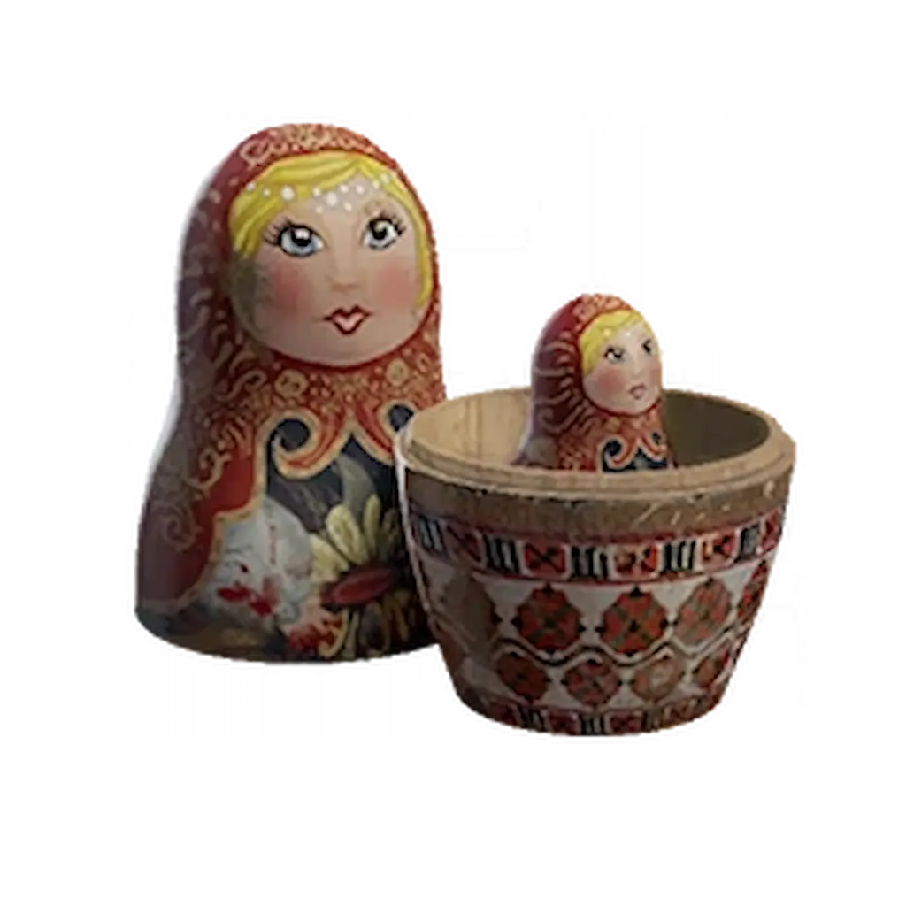
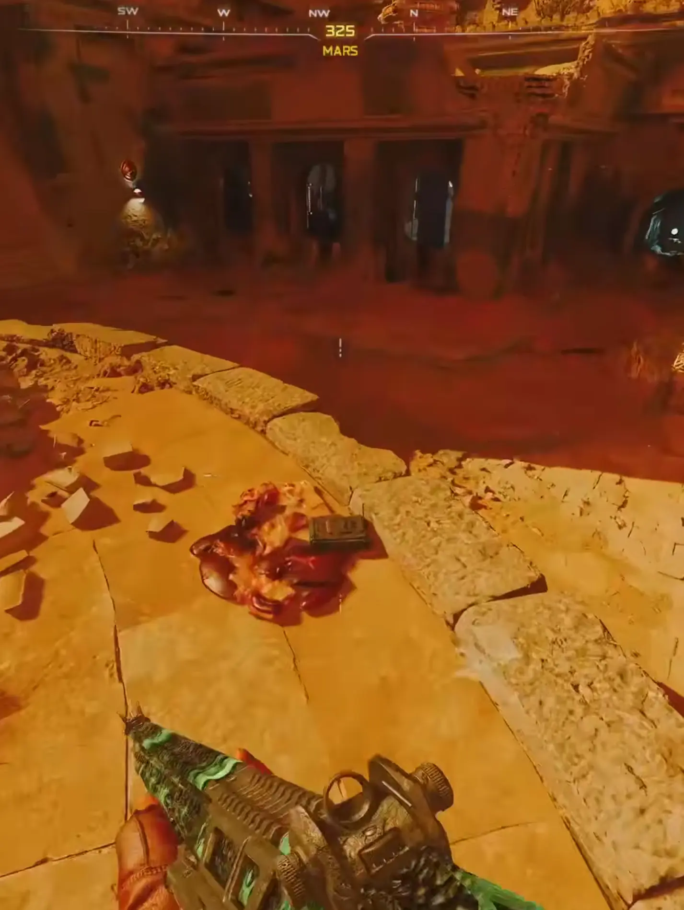
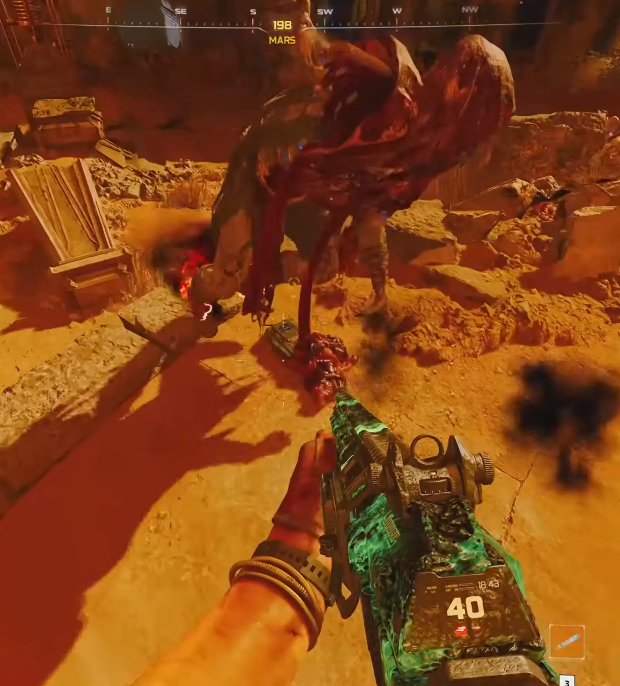
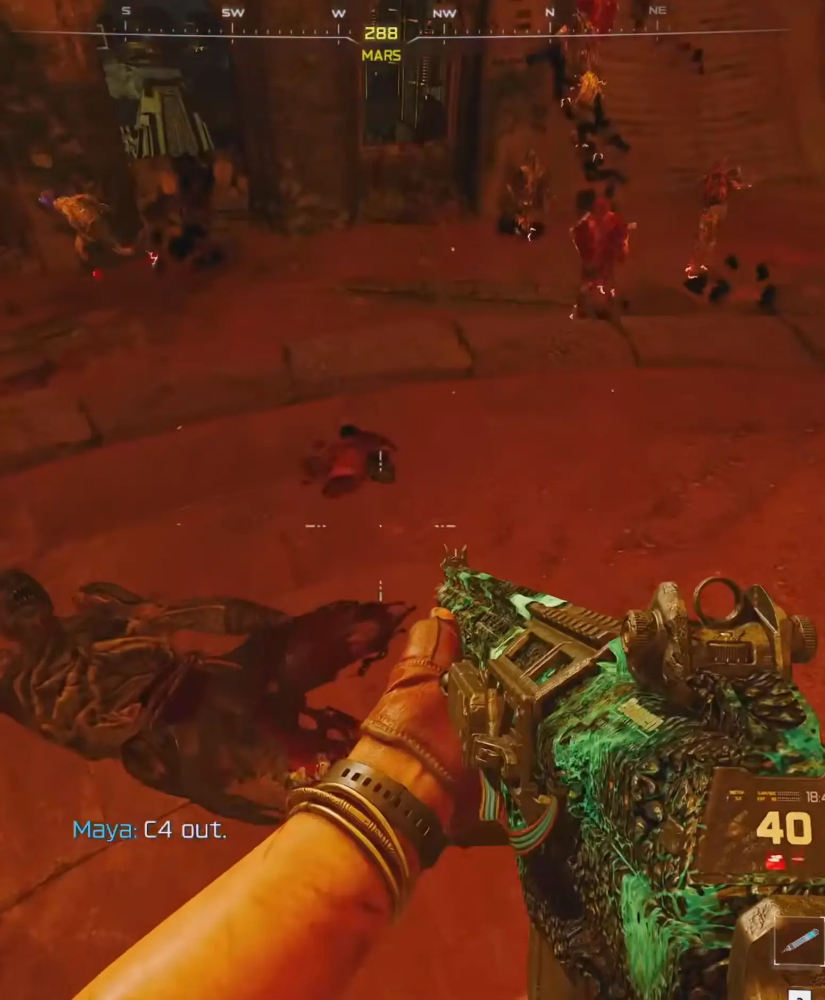

Zadanie zadziała wyłącznie w meczu Klątwa na poziomie co najmniej Tier 1.

Zanim Element 115 kompletnie namiesza Wam w głowach, musicie spełnić te fundamenty:
UGdy znajdziecie się w sekcji Marsa, skierujcie się do samego centrum areny:



Po poprawnym ukończeniu trzech sekwencji obok Was pojawi się portal.
Zostaniecie przeniesieni na Dziedziniec Obserwatora Gwiazd spowity żółtą poświatą.
PRO TIP: Wybierzcie ulepszenia o długim działaniu lub dużych obrażeniach obszarowych, jak Aether Shroud (Eteryczna Zasłona), Frenzied Guard (Szalona Gwardia) lub Dark Flare (Mroczna Flara).
To prawdziwe wyzwanie dla fanów optymalizacji